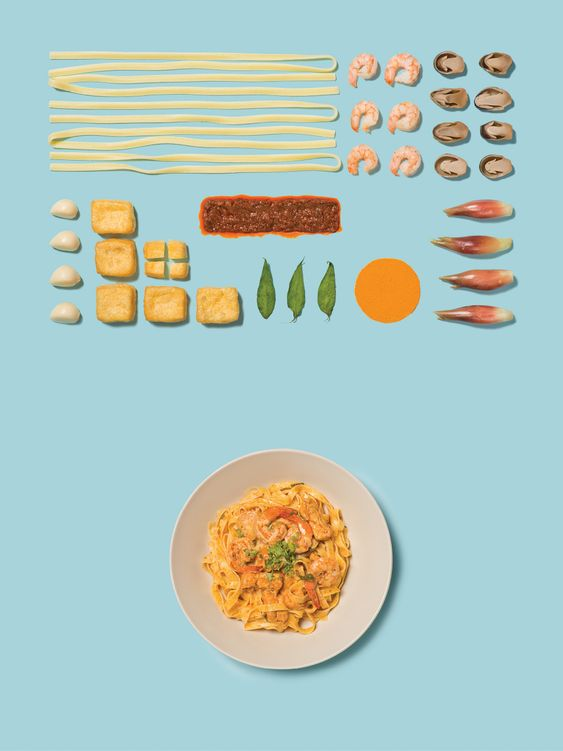

Самые вкусные рецепты у нас!
| Ингредиенты: | Инструкция: | ||
|---|---|---|---|
| Спагетти, мидии, креветки, ламинарии в соусе, чеснок, зелень. | 1. Обжарить на сковороде очищенные морепродукты с чесноком. | 2. Смешать с отваренной до готовности пастой. | 3. В готовое блюдо добавить мелко натёртый сыр и зелень |